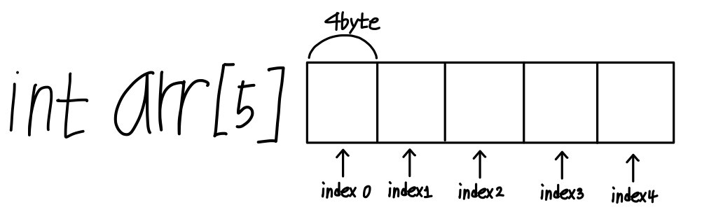

Yongyong's C programming
C Programming
- Array
- Pointer
- Struct
- String
! Array !
1. 배열의 선언과 초기화
배열(array)란, 어떤 한가지 자료형을 연속적으로 나열하는 것을 말한다. 만약
100명의 이름을 저장하여 사용하고자 한다면, 100개의 변수를 선언해서 각각 저장하고
사용해야 하는데, 배열을 사용하면 변수 하나로 아주 쉽게 사용할 수 있다.
배열을 선언할 때는 아래와 같이 사용한다.
자료형 변수이름[갯수];

int형 a라는 변수는 5개만큼을 저장할 수 있는 배열로 선어되었고, 각각의 요소에 1,2,3,4,5를 저장하도록
초기화 되었다. 이런식으로 선언할 수 있고, 초기화는 중괄호{}로 묶어 각각의 요소를 콤마로
구분한다.
초기화 이외에 이렇게 사용해서는 안된다.
배열의 초기화는 변수를 선언할 때 처럼 생략하거나, 갯수보다 적은 수로 초기화 할 수 있다.